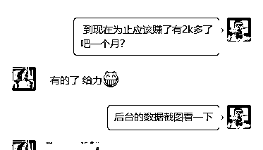
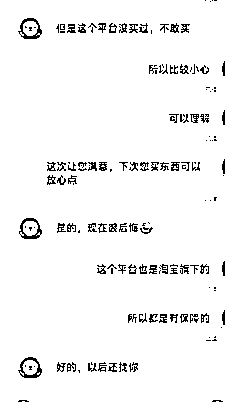

来源：https://cxf1s7tdub.feishu.cn/docx/VFwTdYT25oHECPxsoVbcf05in3c
圈友们大家好，我叫金又又，星球编号5575。
今天主要想和大家分享作为新生的我们，普遍会处在一种状态，除了那些项目已经很稳定了，但是大多数人付费是为了提升自己的认知，是为自己可以找寻一份除了主业还有一份稳定的副业收入，我们可能会一直迷茫一直犹豫，诚然，我就是这样过来的，今天就是通过我的一点心得分享出来，希望对新生能有收获。
加入了几个知识星球，曾报名学习了视频号、小红书爆款笔记、直播切片、红包封面、问卷调查，有项目就去学习了解。
但是那时候自己的执行力没有拉满，并且很急切想要得到一个正反馈，所以由于个人原因。
期间报名了付费项目【京东短视频】，在这期间看到有很多人是从我这里下单，但是显示在后台却发现没有一点收益。
后来问了一下，原来他是先从其他人那里看了视频，然后在我视频这里下单，而这收益属于上一个人的，真的是操蛋了，结果大家也都已经知道，没有赚到第一块钱
后面我也学会去因为事情的结果，去思考本质了。知道不是项目不挣钱，是我自己的原因导致不挣钱，因为想挣钱的人终究会想破脑袋怎么去赚，不想赚的想坐享其成，想立马就拿到结果的人，大概率是赚不到钱的。
对于一个普通人，没有资金、没有资源、只有去付出更多的精力更多的时间去弥补。
在这期间，我也去付费了一些大佬，我以为是大佬可以手把手带教，但是遗憾的是一个项目没落地。
那时候自己依赖在某一件事情某一个人身上，相信他就可以带我挣钱，自己完全没有思考，人家带你挣钱，但是你能挣到钱吗，你自己不提升自己，整天想着坐享其成。
现在悟了就是，不要把某一个人或者某一件事想得太过于美好，只有深接触你才知道这个人和这件事到底是怎么样的，但是只有经历过，你才能更有体会。任何东西都是需要自己去经营去思考。
相信有很多新生都和我一样这种想法，就想找到一个赚钱的项目，然后很快就拿到正反馈，很快就月入一万，月入十万。
可能我们现在加入了很多付费社群，见识到了很多大佬，但是别忘记月入5k的人在中国还是少数。
我们最重要的就是要放平自己的心态，先过好眼前的生活，再着手去做其他事情
那我是如何经过上面所诉的这些，走出犹豫和迷茫的？
其实根本的问题我们都知道，但是人性就是这样子，赚钱本来就是反人性的。
对于普通人，我们应该不断汲取比较前沿的信息，还有多去实操，哪怕没有结果，前期我们都是在积累，积累到一定程度了，我相信赚钱是不会太遥远。有时候运气还有选择都是相当重要。
接下来，通过朋友了解到了高客单闲鱼，在今年的2月份做了闲鱼高客单高利润产品，截止到七月份利润已经有7w+，虽然这个收益很一般，但是对于我来说目前是比较乐观的，毕竟谋求的也是一份副业收入，有了正反馈了，做起事情来就会更有干劲。
闲鱼市面讲的太多了，闲鱼是对于任何人比较友好的，不用押金，且可以比较快的看到正反馈。
我带了一个好友做了一下，现在月收入也有2k+单号，因为市面上讲闲鱼的太多了，玩闲鱼无货源其实没有什么玩法，就是货源+多号操作放大自己的收益。
并没有什么黑科技。要说的其实就是有一些细节的把控。
我做的是闲鱼无货源高客单高利润产品。
什么是无货源？
就是说我们不用进货、囤货，我们只需要顾客下单然后发给团长下单，发货了物流单号给你，你复制到后台点击发货即可。
售后也有专人负责，我们只管售前销售出单。
我朋友也是在一个月时间操作后也是赚了1k多2k，也是当一个副业在搞，从开始就和他说一个月就1-2k保底收入，后面低迷期，说坚持不下去了，也是我把他拉回来。
心态摆正，不是说天天都有单，也有可能会遇到售后，售后也是有售后处理，但是处理不多的都会影响到心情。

时间和精力多的会赚更多，因为我时间比较自由，所以回复比较及时，不会流失顾客。部分成交数据
关于闲鱼数码产品我的几点心得，那就是越是透明的东西越不透明，哪怕同个规格同个产品，别人卖1000，我卖1200，还是有很多人选择1200。
那是为什么呢？那就是服务！价格不是我的特色服务才是。所以当我们在卖东西的时候，我们的服务态度，我们的话术就显得非常重要了。想多赚一点就是在这里。

截止到目前为止已经连续几个月月入一万++单号利润
账号注册：直接用支付宝登录。
老账号
基本养号3天就可以去上架产品，重新刷新标签。
新账号
一个身份证可以开通三个支付宝也就是可以弄三个闲鱼号，如果是同个类目的话不建议，三个号都一样，除非做不同类目，最好用家里人或者亲朋好友的支付宝注册。
对于账号的问题，闲鱼是芝麻信用分来排序，芝麻分越高，那排名前期都会优先展示芝麻极好，优秀，良好以此类推。
注册完，登录账号，其他都不用动他，就是刷产品，刷你想要做的类目产品，然后去签到，这个步骤重复3-7天。
因为我做的是高客单高利润的产品，数码类的。
养号的时长3-7天，这期间每天都去签到，以及搜索准备布局品类的产品关键词搜索。
一般养号3天左右系统就会推送你经常浏览以及搜索过的商品给你，如果已经推送了准备布局的商品给你了，说明账号已经养成。
每天上架3-5个品，前期每天都要操作上架，看曝光，如果是老号信用极好，可能上架之后曝光应该会比信号好一点。
自己可以多测试，可以准备两个号开始，看看哪个号数据好一点。
上架的时间没有固定说法，可以早上8-9点，中午12-1点，晚上7-8点，上架5天左右的品曝光低，浏览少的可以删除，重要的一点，上架之后就不要频繁去改动，你改动一下系统就会审核一下。
标题前11个字很重要，所以多看看同行，一定要多看，看多了就有感觉，文案也要根据实际情况，比如很多人都写这样你就得稍微改动，了解产品之后可以去看他的卖点，突出卖点。
不知道怎么找卖点？比如拼多多款上到闲鱼上面卖，怎么突出卖点？可以从商家的详情页，商品答疑，好评里面筛选出来几个可以突出来写的卖点。
封面的话最后都是用实拍图。
看你上架的是什么产品，如果是拼多多的货，从评价里面下载好看的实拍图，搜索同行做得比较好的，我想要数多的，看看封面的角度是怎么样，模仿起来。
先抄后超，影响顾客点击浏览的主要有几个因素：封面，价格，标题字眼。
价格不能设得太过于高。如果相同的关键词然后图片差不多，价格你卖2000，别人卖1000，可能客户就跑到那边去咨询了。
所以要找到一个价格平衡点，能够刚好可以吸引顾客，同时也是针对这个价格的人群进来，成交的可能性就更大。
那我们做一个店铺，第一个如果你是专门做数码的，也可以上架一些闲鱼上面卖的比较好的拼多多产品。做一下引流款。
引流款就是：比如同行在拼多多拿货的小茶几卖19.9，我想要数有大几百，浏览量几万，那这个就可以去上架，那我们如何上架？可以直接截图主图图片，然后在拼多多识物找品，找到价格比较低的产品，评价数中等的，如拼多多卖12.9元，同行卖19.9，赚七块钱，那我们就可以比他低，卖18.8赚6块钱这样子。
我们做的目的不是要赚钱，我们的目的是要出单，让店铺快速运转起来，积累店铺权重。
关于地区发布选择，我操作的账号一般发布地址北上广深，因为这几个地址搜索一下，是搜索量比较高的地区，要结合自己所卖的产品，通过百度指数搜索查看哪些地区搜索多，然后发布地就选择该地区。
针对货源产品是在哪里自己选择往哪里，但是也不一定要货源产品发货地。【可以用百度搜索百度指数，然后搜索关键词哪个地区比如人搜索，然后发布的时候选择该地址】
标签最好打上10个以上，但是得看产品，标签打上可以增加曝光度。所以这个都要打上。
补单技巧：如果有出单就不要拍了，有咨询，但是没有出单的。如果都没有咨询就选数据好的
一天s单多少限量吗？不用太多，每个链接一单。能起来就起来，起来不了就算了。
补单怎么做？补单就是通过关键词让对方搜索这个关键词找到你的产品，然后进行咨询假聊，后面改价比如10-20元，让对方拍下，拍下后在拼夕夕上面买个礼品物流单号，那边发货在闲鱼发货。
开始可以找你的朋友家人帮忙补单，后面可以加入Q群或者贴吧里面搜索咸鱼互补资源（感兴趣的小伙伴也可以找我交流）
进qq精刷群找人流程:
1.按照上面发精刷的方法制作出自己产品的关键词搜索截图，把产品标题、价格、地区打上马赛克，进到qq群里加那些需要互精刷的人，加上之后把你的截图发给他，把你的精刷要求发给她，如果是小白第一次不懂操作的可以叫她先发，你就说我的精刷要求跟你的一样就行。
2.商量好精刷改价多少钱，一般是1-10。
3.双方开始按照精刷要求去咸鱼上操作，操作完了回访qq告知对方。
4.商量好三天后收货出评，并且做好备注，以免过后忘记需要出评价时找不到人。
挑那些曝光增长快或者点击率高，询单量多，出单多的链接。
如果集中在同一个链接最好，不集中，就刷曝光增长快的一到两个链接，一个刷6-7单，隔开一个小时一单。然后观察7天不进流的，没有浏览量的，没有曝光度的那些链接慢慢下掉，然后每天上3个或隔天上5个新的链接。
比如A链接今天曝光500，B链接今天曝光2000，明天截图，发现A链接曝光20000，B链接曝光10000，
那A链接曝光增长率为:20000-500=19500，B链接曝光增长率为:10000-2000=8000，
因19500>8000，固A链接曝光增长快，所以优先刷A链接
像比如做数码的，顾客下午单之后会有一个顾客的信息，我们可以用一个小号加顾客微信。
一方面可以解决顾客的担忧，或者有什么售后的话可以直接v信联系；另外一方面就是有些顾客是公司采购的，所以买的话就是大几台的购买，也是为了客户复购做准备。
很多人在问闲鱼还能去做吗？是不是很熟悉？
比方说闲鱼这个项目，闲鱼这个项目是很多人看不上的一个项目，为什么会看不上呢？因为他的天花板太低了。
他没有办法用钱去砸，所以你就不能放大，很多公司很多大团队就看不上这个项目，但是对于我们普通人来讲，我们的目标不是一个月要赚个几十万几百万，一个月我们就想赚个几千。
在闲鱼平台，每个人都是有机会，每个人都是有饭吃的。认清楚自己只是一个普通人，找到适合自己的赛道，抓住这个机会，做一个长久稳定的项目，比什么都强。
很多人会问：哎呀现在这个都那么多人在做了，还能去做吗？
我曾经也是这种想法，无论哪个项目，在被你知道的时候，不知道有多少人已经赚到盆满钵满了，然后你却在犹豫迷茫说都那么多人做了，赚不了钱的了。
是啊，这种想法在某一种程度上已经扼杀你了。
无论哪个行业哪个项目，都有赚钱的还有不赚钱的人，大多数时候不是项目的问题，归根到底还是人的问题，因为想做的人永远可以做到并赚到第一块钱，做了一半的就怨天怨地的大概率拿不到自己想要的结果。
以上也只是我最近在做的项目的一些个人说法，但是主要是想和我一样普通的淘金新人分享，只要是大家做出成绩的项目，都是可以去做的。
只是我们心里怎么去衡量你想去赚多少钱，你能不能赚钱的问题而已。
一直在犹豫和迷茫，停下来 看一看，先坚持做一个项目，先不要想那么多，就去做，做了再说，想都是问题，做才是答案。
所以做项目这件事情，是你怎么对待它，它就怎么对待你。
第一次在星球发文，欢迎大家来交流，如果没有货源的，可以联系我提供高客单高利润货源。我是金又又，一个愿意付费又愿意实操的新生。